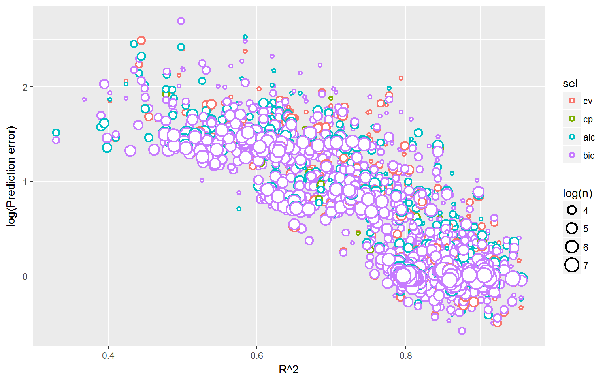

Normally distributed \(x\)s
data[,i] <- rnorm(n)Some correlated with others
data[,i] <- data[,j]+rnorm(length(data[,j]),sd=0.8*sd(data[,j]))Generate coefficients (1 or 0)
coeffs <- rep(1,p+1)
coeffs[sample(seq(2,p+1),floor(p/2))] <- 0
data %*% coeffs + rnorm(dim(data)[1],mean=0,sd=sd) \(n=300\quad p=4 \quad \sigma = 1\)
\(n=50\quad p=8\quad \sigma=1.2\)
## (Intercept) a b c d e f g h
## cpmod TRUE FALSE FALSE TRUE FALSE TRUE FALSE FALSE TRUE
## aicmod TRUE FALSE FALSE TRUE FALSE TRUE FALSE FALSE TRUE
## bicmod TRUE FALSE FALSE TRUE FALSE TRUE FALSE FALSE TRUE## $AA
## a b c d e f g h
## cvmod 1.476 0 0 1 0 1 0 0 1
## cpmod 1.476 0 0 1 0 1 0 0 1
## aicmod 1.476 0 0 1 0 1 0 0 1
## bicmod 1.476 0 0 1 0 1 0 0 1